Our major initiative of 2021 – gifts to help our newest Kiwis feel at home.
Uniting Canterbury Women was devasted to hear about the plight of the evacuees who fled Afghanistan to New Zealand at the end of August to escape the brutal new Taliban regime. Many men, women and children went through an incredibly traumatic time to get here and arrived with little more than the clothes on their backs.
We were determined to do something to help, so started a Givealittle campaign to raise money to create individual Welcome Packs for the evacuees at the Mangere Refugee Resettlement Centre. This was a cause especially close to our hearts, as two of our current crew members, Zahra Hussaini, and Suhayla Asghari are former refugees from Afghanistan. They both spent time at the Centre on their arrival to New Zealand, and never forgot the kindnesses they received.
We easily surpassed our goal to raise $11,000 – reaching over $14,000 in the end thanks to great support from Kiwi donors. Our campaign also attracted the support of generous social enterprises and businesses who either donated goods for the packs, or offered wholesale prices or less. Even former Prime Minister, Helen Clark got behind the Givealittle campaign, mentioning it almost daily on her social media platforms, and there was a story on 1News at Midday talking about the initiative.
In early October, with the help of some awesome women, we packaged up around 250 very special Welcome Packs, filled with items that would introduce the evacuees to their new country, and also remind them of home. The packs included fragrant spices, saffron, and tea which was specially blended by Zahra.
The women were gifted beautiful silk krama (scarves) handwoven in Cambodia, Linden Leaves products and TradeAid bags, among many other items, while prayer mats, woollen hats and thermos flasks were among the items in the men's packs.
We were so excited to hear that the packs arrived in Auckland, and can’t wait for the feedback from the Centre.
Head to our Facebook page to check out all the stories and photos of the people and businesses/social enterprises who supported us throughout this wonderful journey.
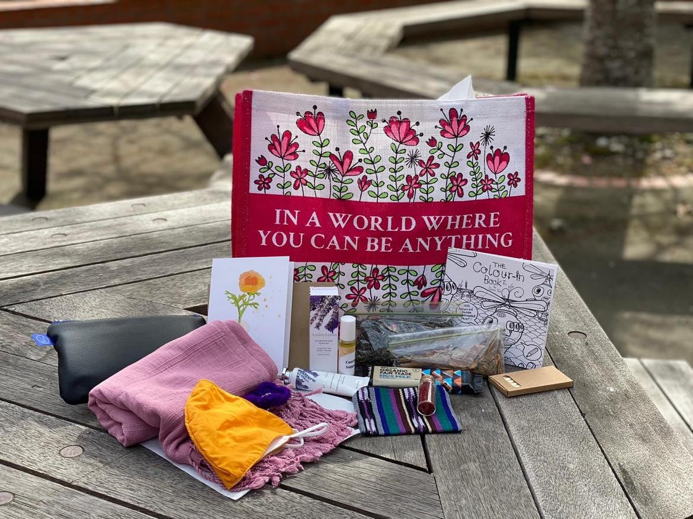
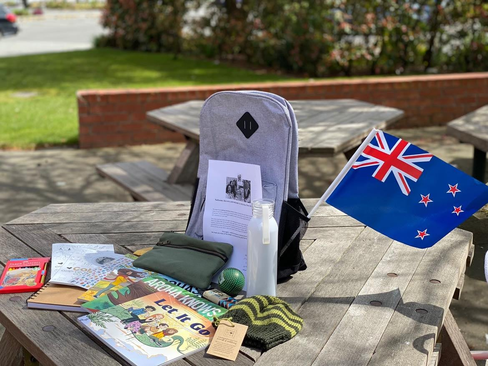
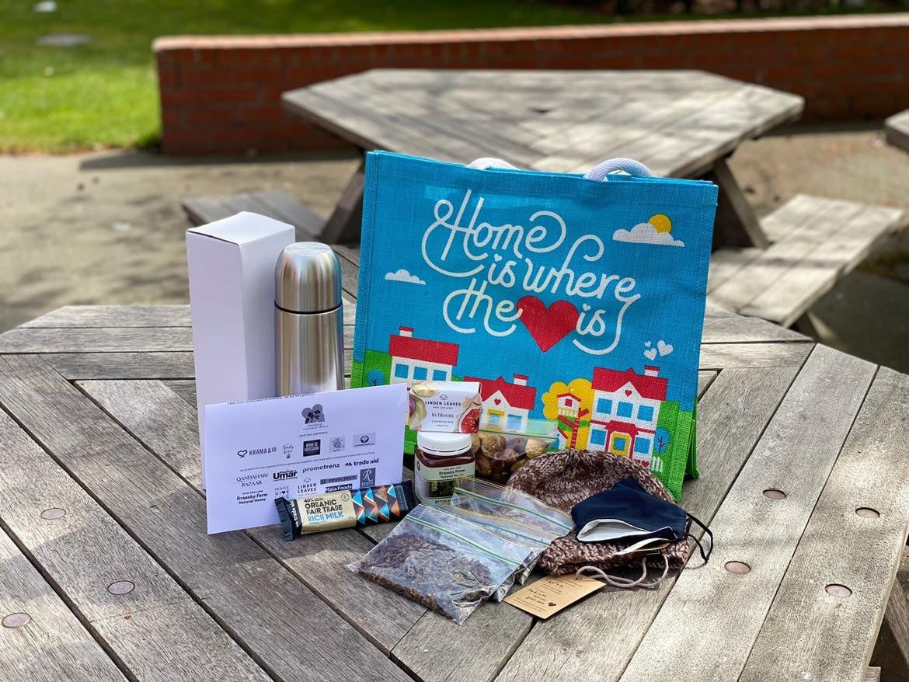
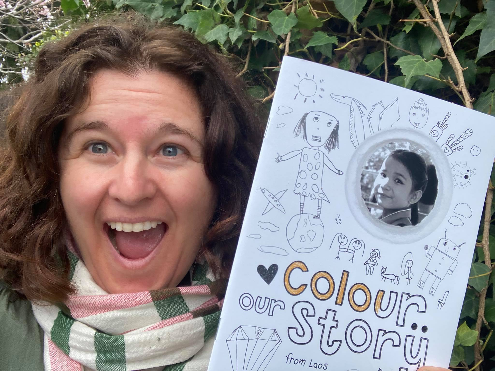
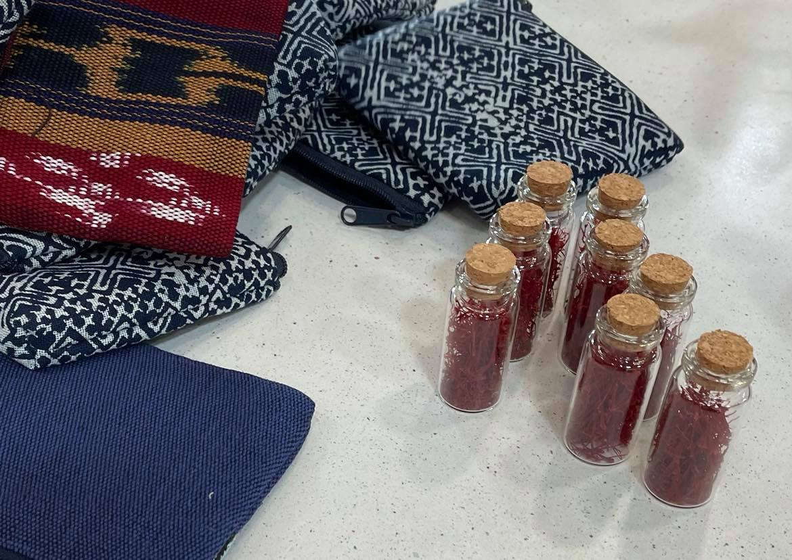
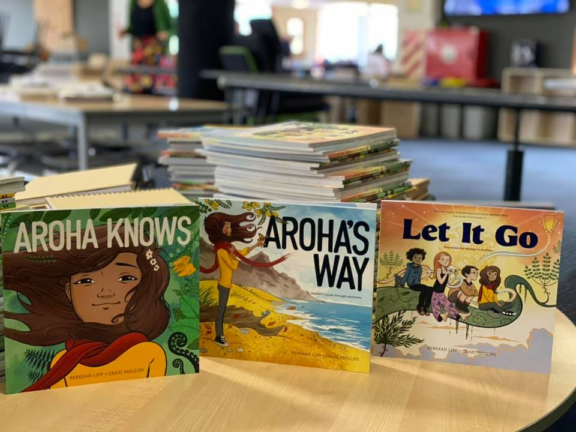
Behind our Givealittle campaign
Jo and Zahra talking about the Welcome Pack initiative.
Awards
Uniting Canterbury Women has won a Christchurch Foundation Women’s Fund Award and Zonta Club of Christchurch South Community Award.


 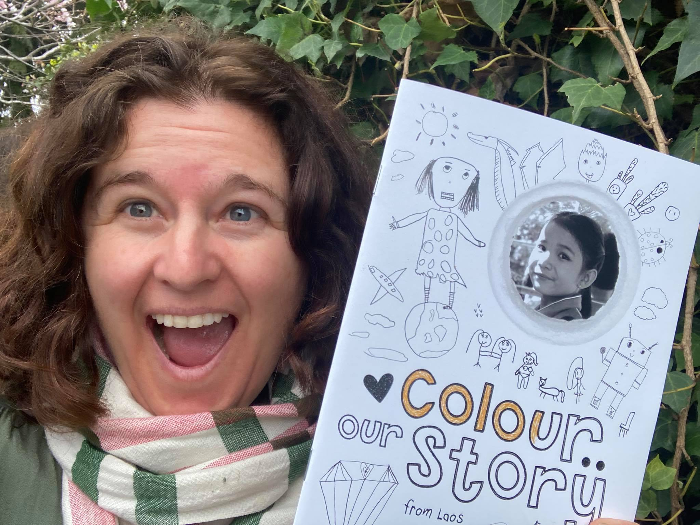
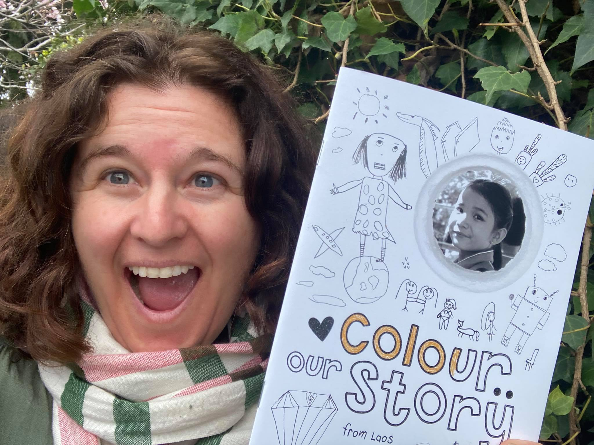
 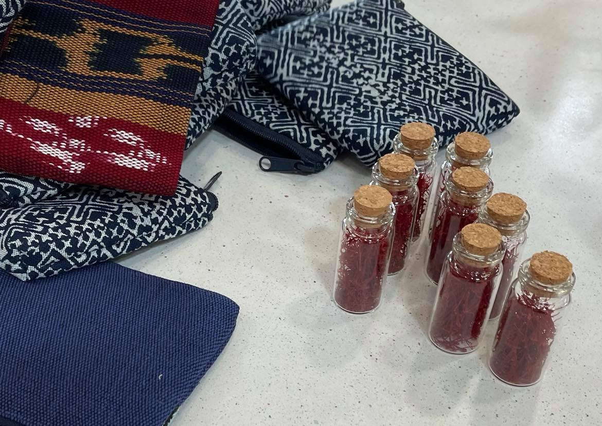
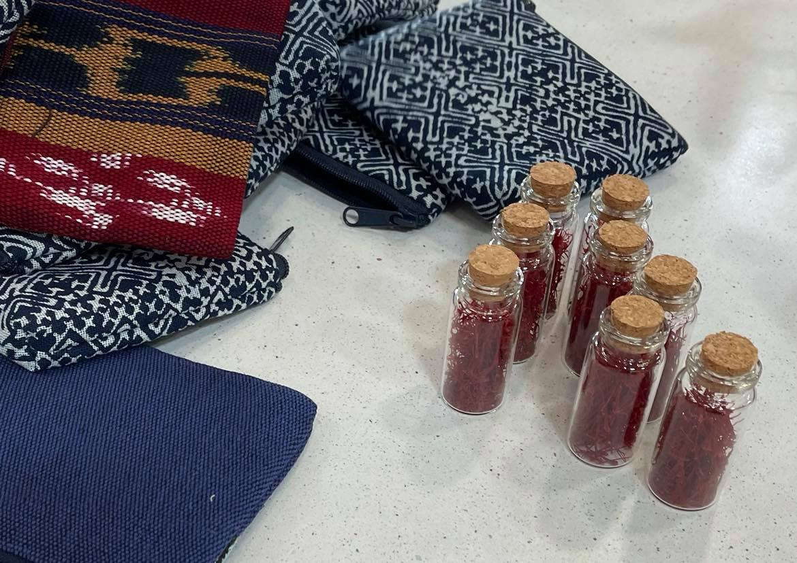
 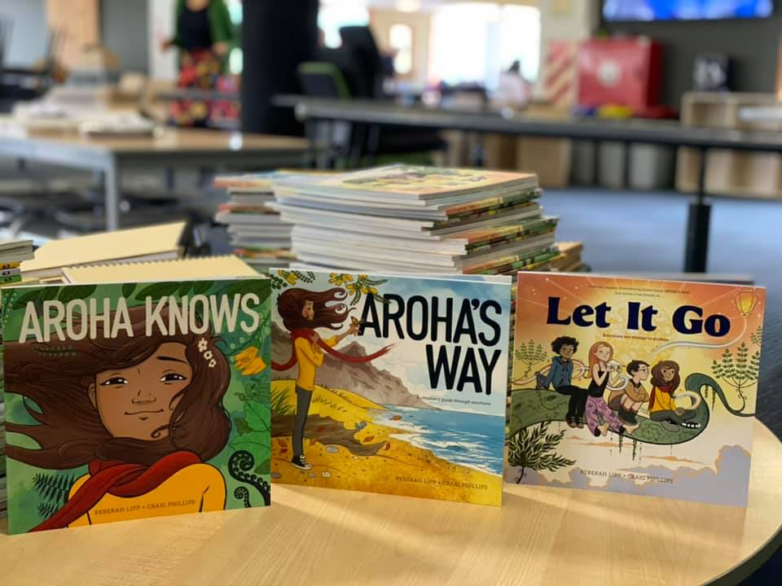
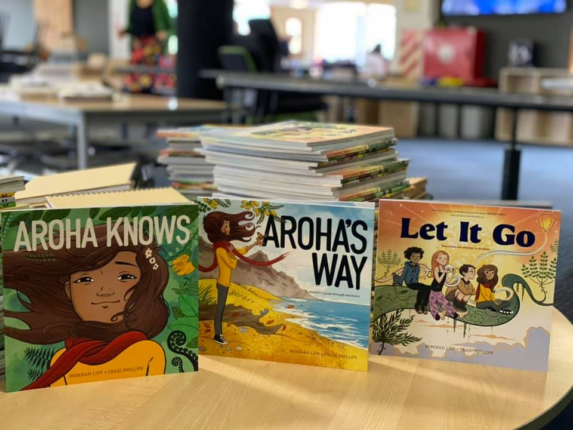